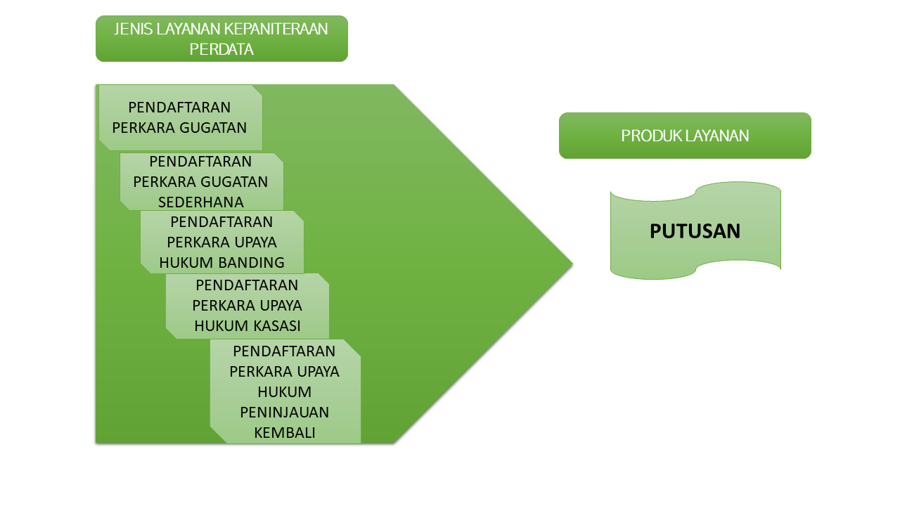
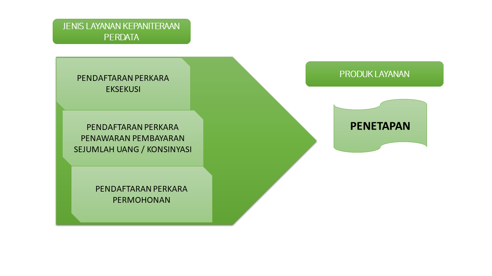

Jalan Raya Pati - Kudus KM.3, Pati Jawa Tengah Kode Pos 59163 Telp/Fax. (0295) 381075; Email. info@pn-pati.go.id
Jenis Pelayanan Kepaniteraan Perdata :
 1.Siapkan Syarat Pendaftaran Perkara Permohonan
a. Surat Permohonan
- Surat permohonan di ketik di Word format doc lalu disimpan di CD atau Flashdisk - Surat permohonan yang sudah diketik di word lalu di print kemudian ditandatangani pemohon (para pemohon jika pemohon lebih dari satu) lalu discan menjadi 1 file format pdf disimpan di CD atau Flashdisk. CONTOH SURAT PERMOHONAN BISA ANDA LIHAT PADA LINK DIBAWAH INI Silahkan pilih contoh yang sesuai kebutuhan anda dan sesuaikan isi surat permohonan anda sesuai kebutuhan anda :
b. Siapkan bukti-bukti pendukung
1. Pendaftaran secara offline
- Fotokopi KTP pemohon/para pemohon dinasegel (materai Rp. 10.000 dan cap) pos – Fotokopi KK dinasegel (materai Rp. 10.000 dan cap) pos – Fotokopi bukti pendukung lain sesuai permohonan yang diajukan misal fotokopi akte dinasegel (materai Rp. 10.000 dan cap) pos fotokopi ijazah dinasegel (materai Rp. 10.000 dan cap) pos fotokopi passport dinasegel (materai Rp. 10.000 dan cap) pos fotokopi sertifikat dinasegel (materai Rp. 10.000 dan cap) pos dsb semua bukti yang sudah dinasegel pos di scan menjadi 1 file pdf disimpan di CD atau Flashdisk. contoh bukti pendukung antara lain :
2. Proses pendaftaran perkara secara online
setelah semua berkas pendaftaran siap, silahkan membuat akun ecourt terlebih dahulu setelah memiliki akun ecourt, anda dapat melakukan pendaftaran perkara secara online untuk informasi pembuatan akun dan pendaftaran online klik link dibawah ini :
Video Informasi Pendaftaran Perkara Permohonan dilengkapi dengan Bahasa Isyarat :
1. Siapkan Syarat Pendaftaran Perkara GUGATAN :
a. Surat permohonan :